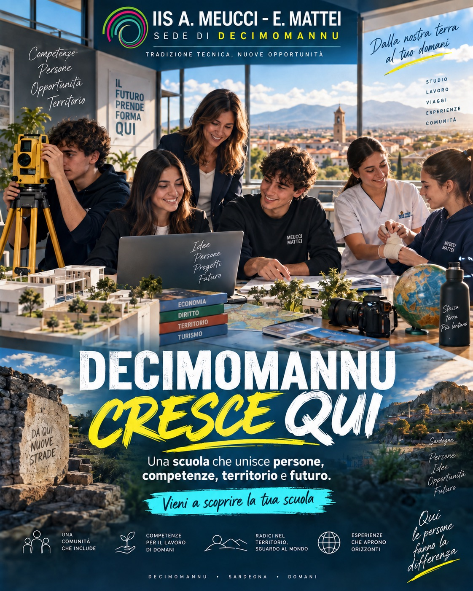

Accoglienza · partecipazione · orientamento
Uno spazio per conoscere e partecipare.
I docenti dell’IIS Meucci - Mattei di Decimomannu dedicano questo spazio di partecipazione a studenti, famiglie e docenti. Qui puoi conoscere i percorsi di studio, scoprire esperienze e attività, orientarti nelle scelte e trovare occasioni per vivere e partecipare insieme alla cura e alla crescita della nostra scuola.

Per gli studenti delle medie
La tua Bussola
Dodici domande su interessi, materie, predisposizioni e aspirazioni. Scopri quali indirizzi approfondire e conserva il risultato in un attestato personale.
Inizia la tua BussolaPer chi
Trova ciò che ti serve
Studenti
Per chi frequenta l’IIS Meucci - Mattei di Decimomannu.
Famiglie
Informazioni utili per accompagnare i figli.
Docenti
Orientamento, accoglienza e materiali di lavoro.
Studenti delle medie
Per chi sta scegliendo la scuola superiore.